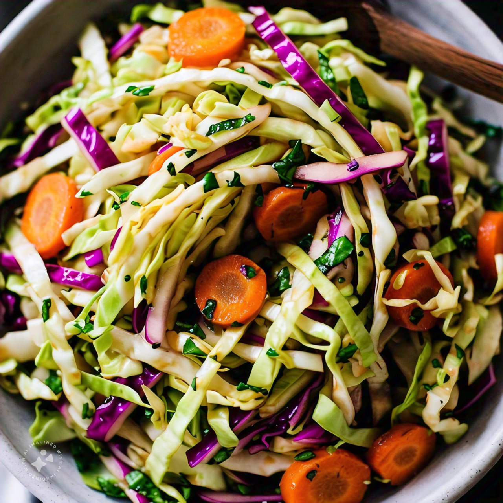

Coleslaw
Description:
A refreshing and tangy coleslaw recipe, perfect for accompanying your favorite BBQ dishes, sandwiches, or as a crunchy snack.
Ingredients:
- 2 cups shredded cabbage
- 1 cup shredded carrots
- 2 tablespoons apple cider vinegar
- 1 tablespoon olive oil
- 1 teaspoon Dijon mustard
- 1 teaspoon sugar
- 1/2 teaspoon salt
- 1/4 teaspoon black pepper
- 2 tablespoons chopped fresh parsley
Instructions:
- In a large bowl, combine the shredded cabbage and carrots.
- In a small bowl, whisk together the apple cider vinegar, olive oil, Dijon mustard, sugar, salt, and black pepper.
- Pour the dressing over the cabbage mixture and toss until everything is well coated.
- Sprinkle the chopped parsley over the top and toss again.
- Let it sit at room temperature for at least 30 minutes to allow the flavors to meld.
- Serve cold or at room temperature.
Tips:
- Use a variety of colorful cabbages, like red or green, for a visually appealing slaw.
- Adjust the amount of vinegar to your taste, or try using white wine vinegar for a different flavor.
- Add some grated onion or bell pepper for extra flavor and crunch.
- This slaw will keep in the fridge for up to 3 days, perfect for meal prep!